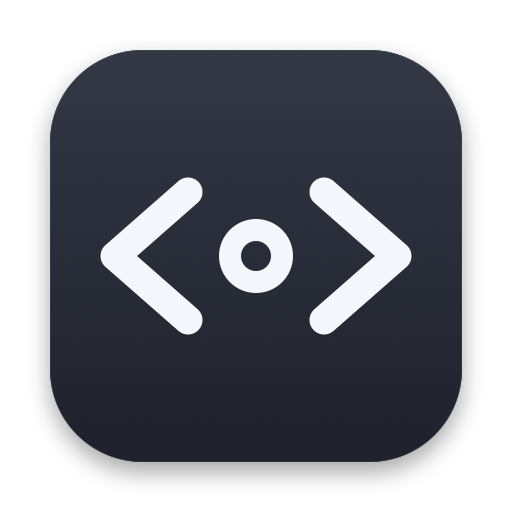

Hide menu bar icons.
That's it.
메뉴바 아이콘 숨기기.
그게 전부.
Slip is a tiny, free menu bar icon hider for macOS. One click tucks away the icons you don't need; another brings them back.
Slip은 macOS용 작고 가벼운 무료 메뉴바 정리 앱입니다. 한 번 누르면 필요 없는 아이콘이 숨고, 다시 누르면 돌아옵니다.
Download for MacMac용 다운로드Try it — this is how Slip looks in your menu bar.
직접 눌러 보세요. 실제 메뉴바에서 이렇게 동작합니다.
Why Slip
왜 Slip인가요
Only what it needs
딱 필요한 기능만
Hide and show. A single Swift file, about 450 KB, no background services.
숨기기와 보이기만. Swift 파일 하나, 약 450KB, 백그라운드 서비스 없음.
No permissions
권한 요청 없음
No screen recording, no accessibility access, no private APIs, no SIP changes.
화면 기록·손쉬운 사용 권한, 비공개 API, SIP 해제 모두 필요 없습니다.
Built for macOS 27
macOS 27 대응
Tuned for the new menu bar layout in macOS 26 and 27, where older hiders stop working.
예전 앱들이 제대로 안 되는 macOS 26·27의 새 메뉴바 구조에 맞춰 만들었습니다.
Set and forget
켜 두면 끝
Optional auto-hide after 5 s to 1 min, and launch at login.
5초~1분 뒤 자동 숨김, 로그인 시 자동 실행을 고를 수 있습니다.
How to use
사용법
- Hold ⌘ and drag the icons you want to hide to the left of ●›.
- Click ●› to hide them. It turns into ‹●.
- Click ‹● to bring them back. Right-click for Preferences.
- ⌘를 누른 채 숨길 아이콘을 ●› 왼쪽으로 드래그합니다.
- ●›를 누르면 숨겨지고 ‹●로 바뀝니다.
- ‹●를 누르면 다시 보입니다. 설정은 우클릭.